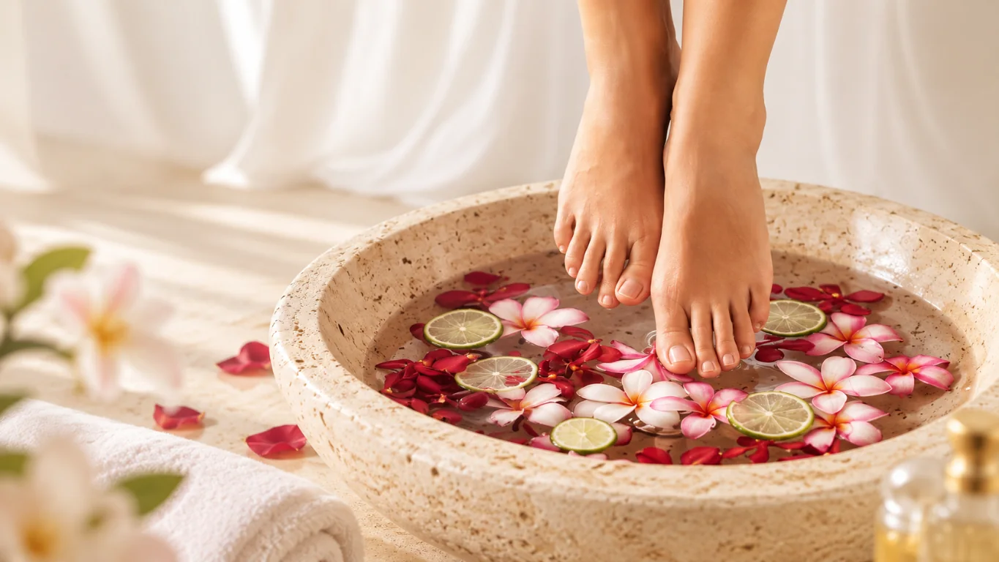

CL CLÍN PODOLOGIA AVANÇADA
O cuidado que
seus pés merecem.
Atenção, acolhimento e cuidado especializado em cada detalhe — em Rio Largo e Atalaia.
 Cuidado em cada detalhe
Cuidado em cada detalhe
Conheça a CL CLÍN
Mais do que cuidar dos pés, valorizar cada passo.
Cada pessoa tem uma história e necessidades próprias. Por isso, o cuidado começa com atenção e escuta, em uma abordagem individualizada que valoriza a saúde e o bem-estar dos pés.
Conheça nossa experiênciaTratamentos e procedimentos
Cuidado para cada passo.
Conheça as modalidades de cuidado da clínica. A conduta é definida após avaliação individualizada.
Depoimentos
Histórias reais, no tempo certo.
Este espaço será preenchido somente com relatos autorizados de pacientes.
[TODO: inserir depoimento real autorizado.]
[TODO: identificação autorizada][TODO: inserir depoimento real autorizado.]
[TODO: identificação autorizada][TODO: inserir depoimento real autorizado.]
[TODO: identificação autorizada]Nossa experiência
Uma jornada de cuidado em cada etapa.
Do primeiro contato às orientações, cada momento é conduzido com atenção e respeito às necessidades de cada pessoa.
Primeiro contato
Conheça a clínica, entre em contato e receba orientações iniciais sobre os serviços disponíveis.
Agendamento
A equipe auxilia na escolha da unidade e na organização do horário de atendimento.
Avaliação individualizada
O profissional avalia as condições dos pés e identifica necessidades específicas de cuidado.
Procedimento
Após a avaliação, é definido o procedimento adequado, conforme a indicação profissional.
Orientações
Ao final, você recebe orientações pertinentes e informações sobre possíveis acompanhamentos.
Nosso ambiente
Um ambiente pensado para cuidar.
Em breve, um olhar sobre os espaços reais da CL CLÍN.
O cuidado começa aqui
Seus pés também
merecem atenção.
Converse com nossa equipe e conheça as opções de atendimento.
Fale com a equipeOnde estamos
Perto de você, em Alagoas.
Rio Largo
- Endereço
- Rua Doutor Emílio Maia, nº 302 — Centro
- Horário
- [TODO: confirmar horários de atendimento]
Atalaia
- Endereço
- Rua Pedro Actoly, galeria Torres, sala 7
- Horário
- [TODO: confirmar horários de atendimento]
Contato
Seu próximo passo começa com cuidado.
Entre em contato com nossa equipe e conheça as opções de atendimento.